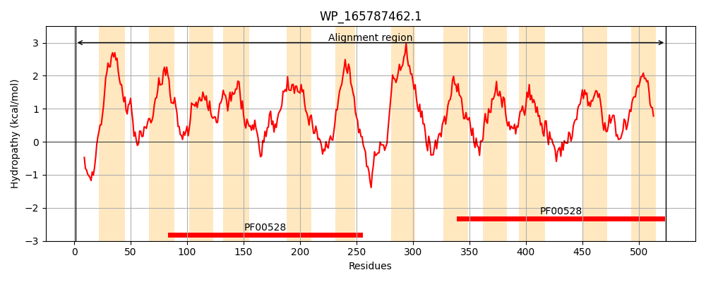
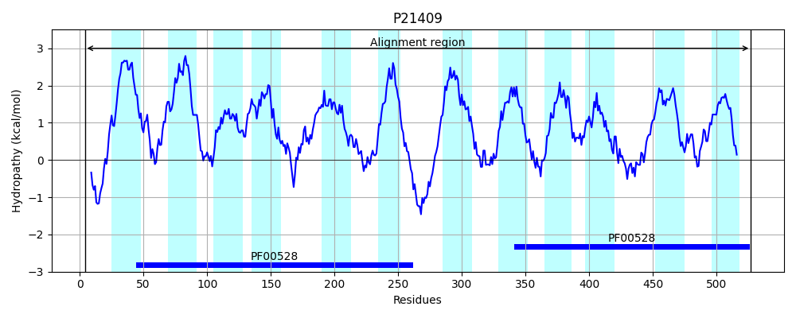
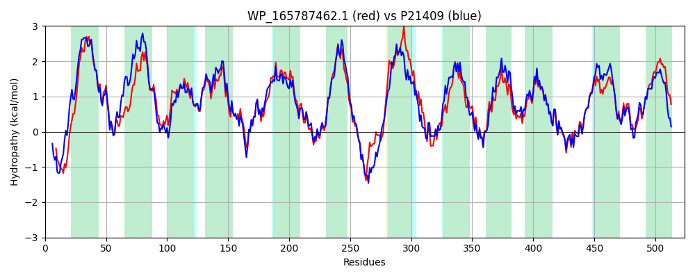

Hit Accession: P21409
Hit TCID: 3.A.1.10.1
Hit Description: gnl|BL_ORD_ID|9354 gnl|TC-DB|P21409|3.A.1.10.1 Iron(III)-transport system permease protein sfuB - Serratia marcescens.
Mach Len: 524
e:0.000000
Query TMS Count : 12
Hit TMS Count: 12
TMS-Overlap Score: 13.600000
Predicted Substrates:CHEBI:34755;iron(3+)
BLAST Alignment:
Score: 1928 , Bit scores: 747 bits, E-value: 0.0e+00, Alignment length: 524, Percentage identity: 71
Query: 1 MSVLSLSLGKKTGRLPERRRPAFPMVALALLFSLLALLPLGFVVAVGFDTGWPTIKALVFRPRVGELLSNTLWLTVLAVPISILLGVTLAWLTERTALAGRQLWSALAVAPLAIPAFVQSYAWVSAVPSLHGLSAGVFLSVLAYYPLIYMPVAAVLRRLDPTLEDVAASLGTPPWKVFFRVVLPQLRLAICGGALLVALHLLAEYGLYVMIRFDTFTTAIYDQFQSTFSGPAANMLAGVLALCCLAILLLESASRGKARYARIGAGAAREQKRLVLGKGAAFGAQLLLLLLVMLAMGVPLLVLCRWLWLGGIDNWLHADLWHSLRQTLLLGAGGALLTTVCAIPIAWLGVRYPRPLFRLLEGCNYITSSLPGIVTALALVTVTIHYARPVYQTEVTLFLAYLLMFMPRALINLRAGIAQAPVELENVARSLGRSPARALWSITMRLAAPGAAAGAALVFLGVSNELTATLLLSPLGTRTLSTGFWALTSEIDYVAAAPYALLMIVISLPLTAVLYMQSKKMAGL 524
+S + ++ +P RP +V A+L SLLALLPLGFV+ V F+TGW T+KALVFRPRV ELL NTL L VL +PI +LGV LAWLTERT L GR+LW+ LA APLA+PAFVQSYAW+S VPS+HGL AGVF+SVLAY+P IY+P AAVLRRLDP +EDVA SLG+ P VFFRVVLPQL+LA+CGG+LL+ALHLLAEYGLY MIRFDTFTTAI+DQFQSTF+GPAANMLAGVL LCCL +LLLE+ SRG+ARYAR+G+G+AR Q L A A LL + L LA+GVP + L RWLWLGG + W +A+LW +L QTL L A GALL T+CAIP+AWL VRYP L+R+LEGCNY+TSSLPGIV ALALVT+TIH RP+YQTE+TL LAYLLMFMPRALINLRAGIAQAPVELENVARSLG+SPA+ALWS T+RLAAPG AAGAALVFL ++NELTATLLL+P GTRTL+TGFWALTSEIDYVAAAPYAL+M+ +SLPLT +LY QSK+ AGL
Sbjct: 4 LSTHAAQTARRYSVVPRHPRPGAIVVVSAVLLSLLALLPLGFVIGVAFETGWQTVKALVFRPRVAELLLNTLLLVVLTLPICAVLGVALAWLTERTTLPGRRLWAVLATAPLAVPAFVQSYAWISLVPSMHGLGAGVFISVLAYFPFIYLPAAAVLRRLDPGIEDVATSLGSRPPAVFFRVVLPQLKLAVCGGSLLIALHLLAEYGLYAMIRFDTFTTAIFDQFQSTFNGPAANMLAGVLVLCCLGLLLLEAISRGRARYARVGSGSARSQTPRRLSPPLAALALLLPIALTALALGVPFITLARWLWLGGFEVWRNAELWPALWQTLSLSAAGALLITLCAIPMAWLSVRYPARLYRVLEGCNYVTSSLPGIVVALALVTITIHSFRPIYQTEITLLLAYLLMFMPRALINLRAGIAQAPVELENVARSLGKSPAQALWSTTLRLAAPGVAAGAALVFLAIANELTATLLLAPNGTRTLATGFWALTSEIDYVAAAPYALIMVALSLPLTWLLYSQSKRTAGL 527 | Protein Hydropathy Plots: |
|---|
|  |  |
Pairwise Alignment-Hydropathy Plot:
|
|---|
|  |